Introducción
Este sitio web corresponde a la entrega extraordinaria de la asignatura Reto Intro al Big Data. En él se documenta el proceso seguido para la creación de infraestructuras en AWS y el análisis de datos mediante Tableau, incluyendo explicaciones y capturas de pantalla.
Sección 1 – Servidor Web con Amazon EC2
Capturas de pantalla
[CS01] Captura del menú de EC2 con el servidor web creado. 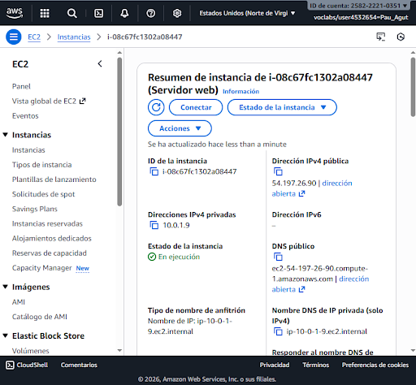
[CS02] Captura del navegador mostrando la página web (Hello World).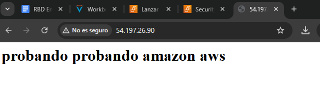
Presupuesto mensual
El coste de esta infraestructura es económico ya que simplemente montamos un servidor web con un hello world, deberíamos pagar la instancia y el almacenamiento, el monitoreo lo podríamos hacer de manera gratuita usando Amazon Cloudwatch y la transferencia de datos hasta el primer GB es gratuita, a partir del primer GB nos costaría 0,09$ por GB pero creo que para este proyecto con un GB mensual es más que suficiente.
- Instancia de Amazon EC2
- t2.micro
- Amazon Linux
- US East
- Precio 0,0104$/h x 730h = 7,59$ al mes
- Amazon EBS
- 8GB
- 0,10$/GB/mes = 0,80USD / mes
- 8GB
Sección 2 – Arquitectura Autoescalada y Balanceada
Capturas de pantalla requeridas
[CS01] Creación de la AMI.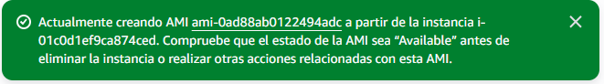
[CS02] Infraestructura VPC creada.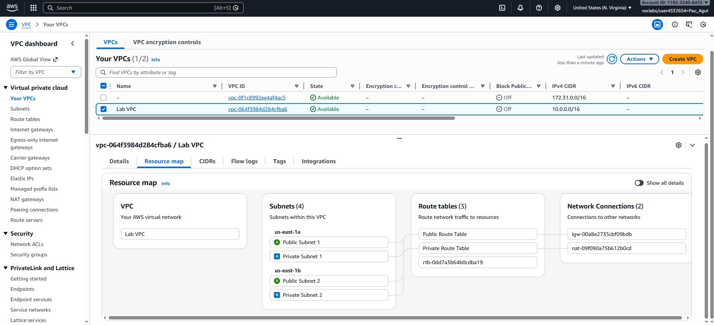
[CS03] Elastic Load Balancer (ELB).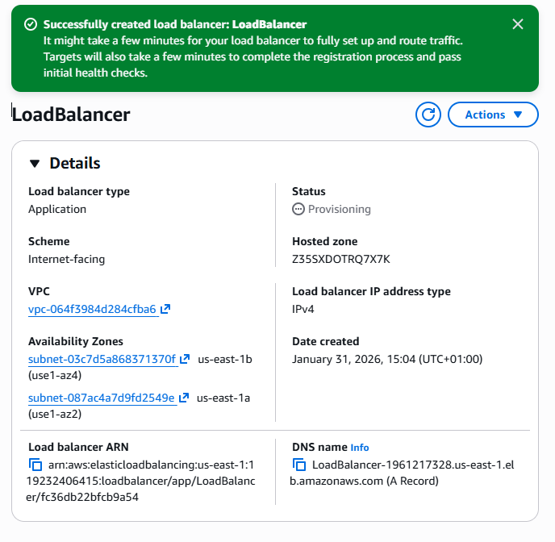
[CS04] Grupo de Auto Scaling.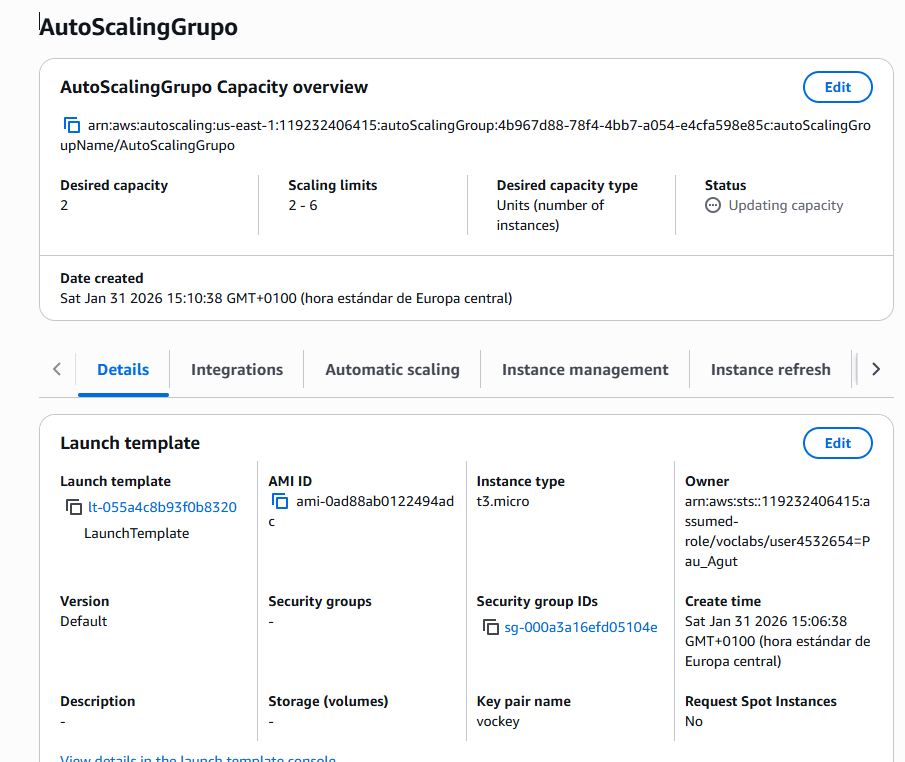
[CS05] Alarmas en CloudWatch.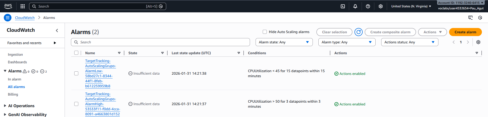
Sección 3 – Tableau: Dashboards y Story
Dashboards
[CS06] Dashboard con valor máximo.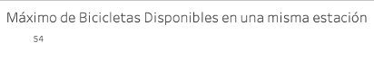
[CS07] Gráficos adicionales y explicación.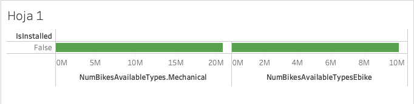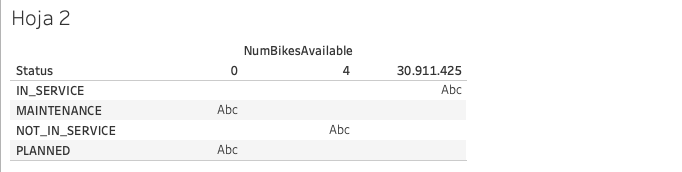
El primer gráfico indica la diferencia entre bicis mecánicas y bicis eléctricas
El segundo indica el total de bicicletas y el estado de cada una
[CS08] Dashboard final con filtros compartidos.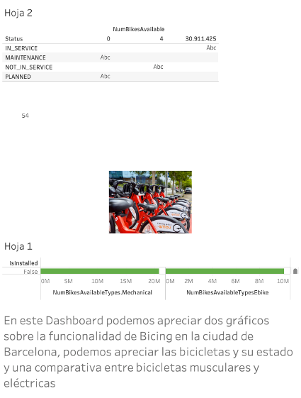
Story
[CS09] Capturas de la Story.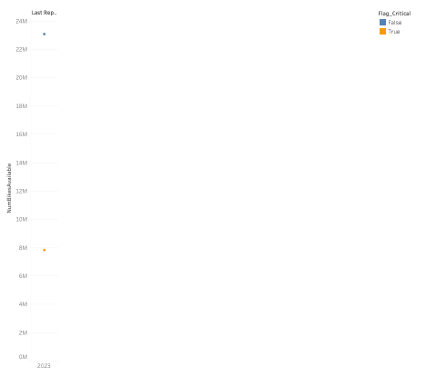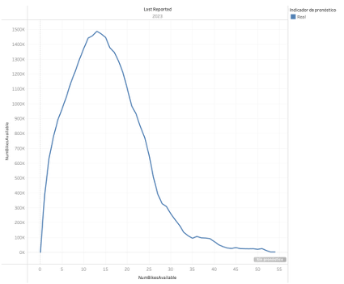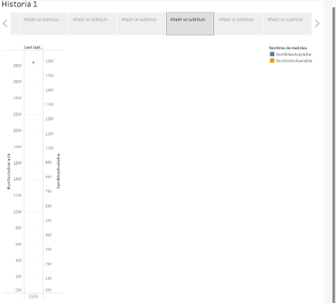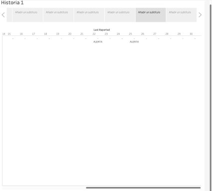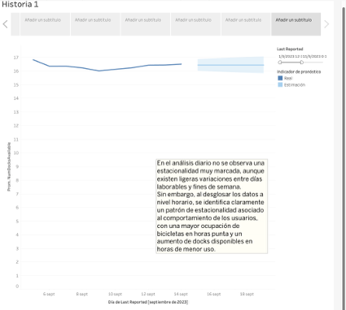
Sección 4 – Limpieza, Procesado y Análisis de Datos
Data Cleansing
[CS10] Gráfico con filtros y valores nulos eliminados.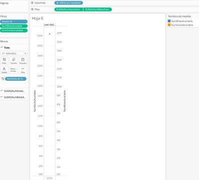
Data Processing
[CS11] Campo flag creado.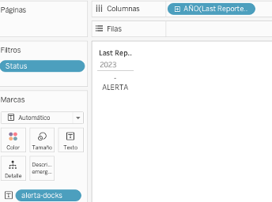
[CS12] Fórmula del campo calculado.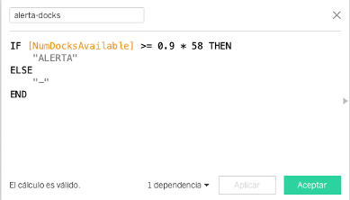
[CS13] Gráfico mostrando alertas.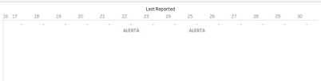
Data Analytics y Conclusiones
[CS14] Estacionalidad.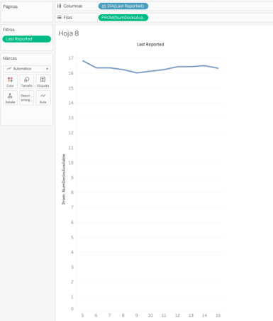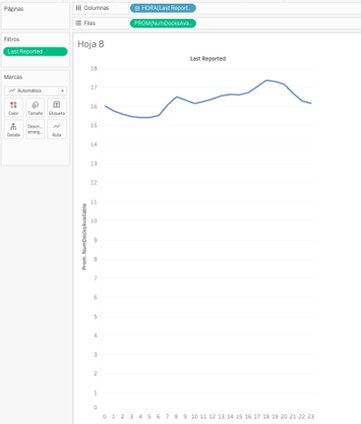
En el análisis diario no se observa una estacionalidad muy marcada, aunque existen ligeras variaciones entre días laborables y fines de semana.
Sin embargo, al desglosar los datos a nivel horario, se identifica claramente un patrón de estacionalidad asociado al comportamiento de los usuarios, con una mayor ocupación de bicicletas en horas punta y un aumento de docks disponibles en horas de menor uso.
[CS15] Pronóstico a futuro.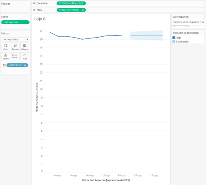
[CS16] Conclusiones finales.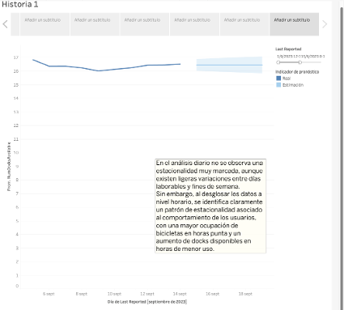